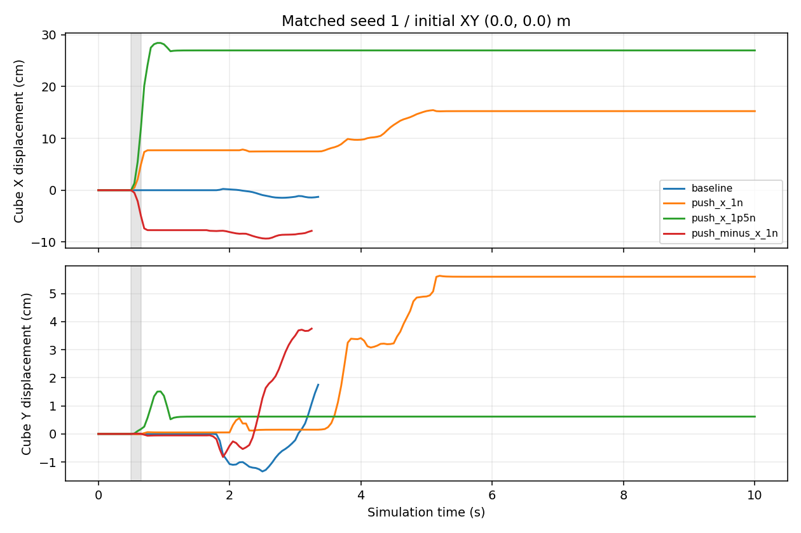
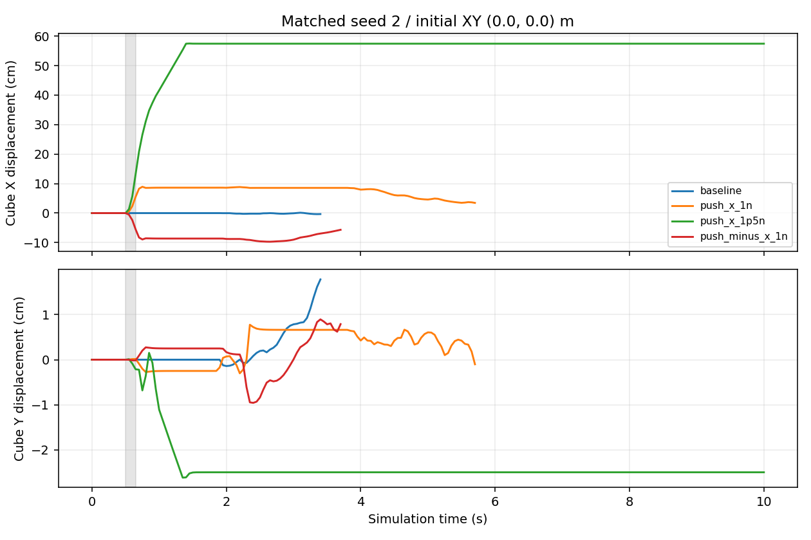

動画全フレーム・成功指標・外力記録を検証済み。初期状態と外力前の軌跡も比較しています。各条件2試行の探索的実験です。
灰色は力を加える時間帯。変位は初期位置からの値で、把持後の動きも含みます。外乱なしでも失敗するシードは、成功例への外乱の評価から分けて扱ってください。外乱なしの成功を確認して選んだシードなので、一般的な成功率の推定には使えません。
| 条件 | seed | 力 Fx, Fy (N) | 基準成功 | 成功 | 成功まで(s) | 外力ステップ数 | パルス完了 | パルス終了時の基準との差(cm) |
|---|---|---|---|---|---|---|---|---|
| baseline | 1 | 0, 0 | 1 | 1 | 3.35 | 0 | 1 | 0.000 |
| push_x_1n | 1 | 1, 0 | 1 | 0 | None | 3 | 1 | 4.970 |
| push_x_1p5n | 1 | 1.5, 0 | 1 | 0 | None | 3 | 1 | 12.070 |
| push_minus_x_1n | 1 | -1, 0 | 1 | 1 | 3.25 | 3 | 1 | 4.970 |
| baseline | 2 | 0, 0 | 1 | 1 | 3.4 | 0 | 1 | 0.000 |
| push_x_1n | 2 | 1, 0 | 1 | 1 | 5.7 | 3 | 1 | 5.520 |
| push_x_1p5n | 2 | 1.5, 0 | 1 | 0 | None | 3 | 1 | 13.281 |
| push_minus_x_1n | 2 | -1, 0 | 1 | 1 | 3.7 | 3 | 1 | 5.520 |
パルス完了=0は、その時間帯までに試行が終了したケースです。外乱を完了した比較として数えません。

